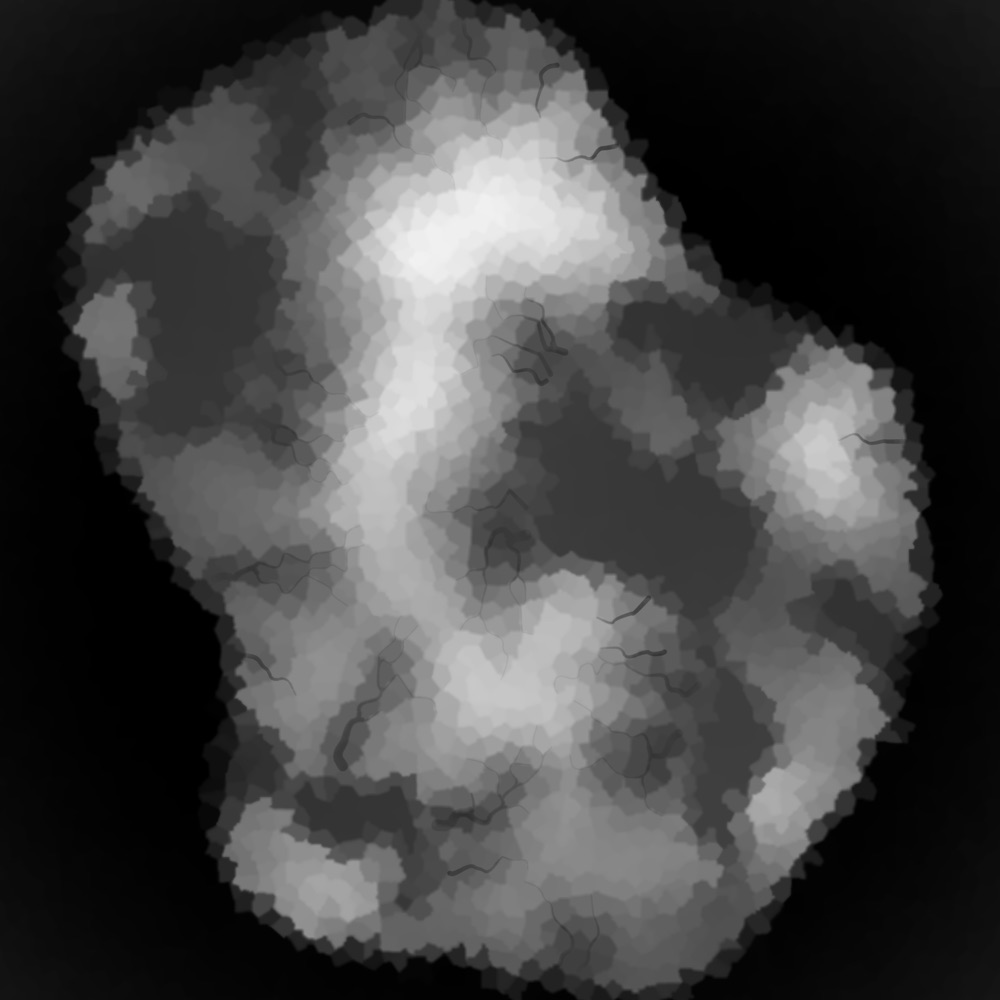
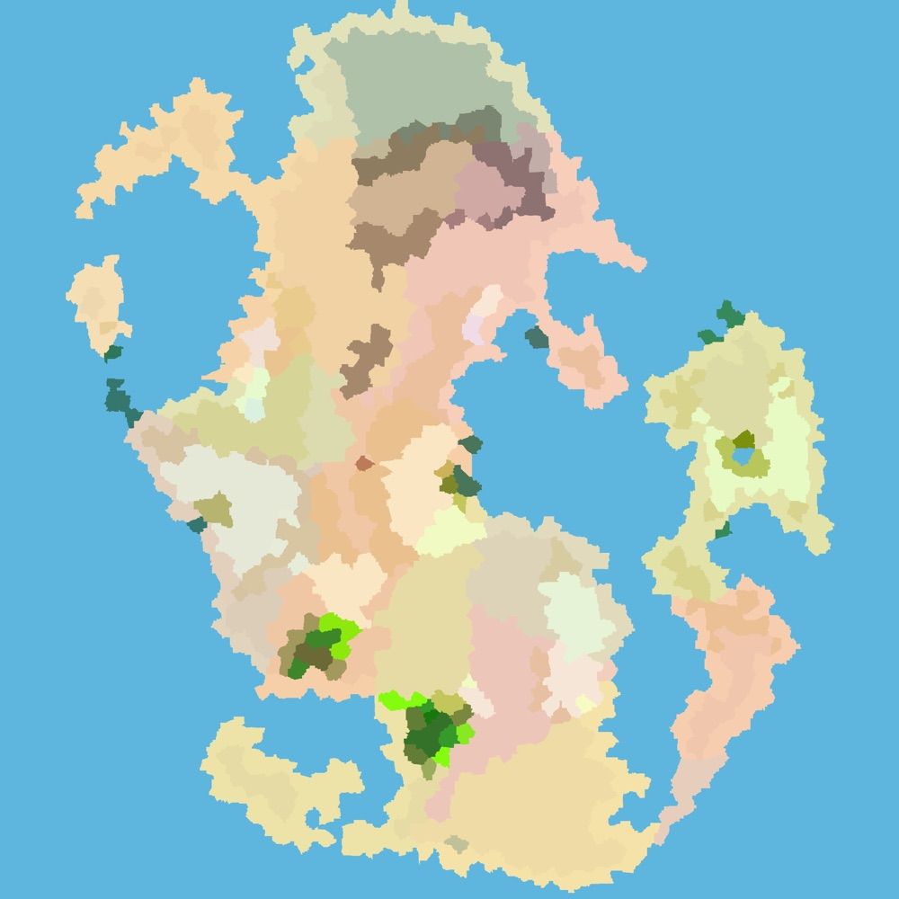
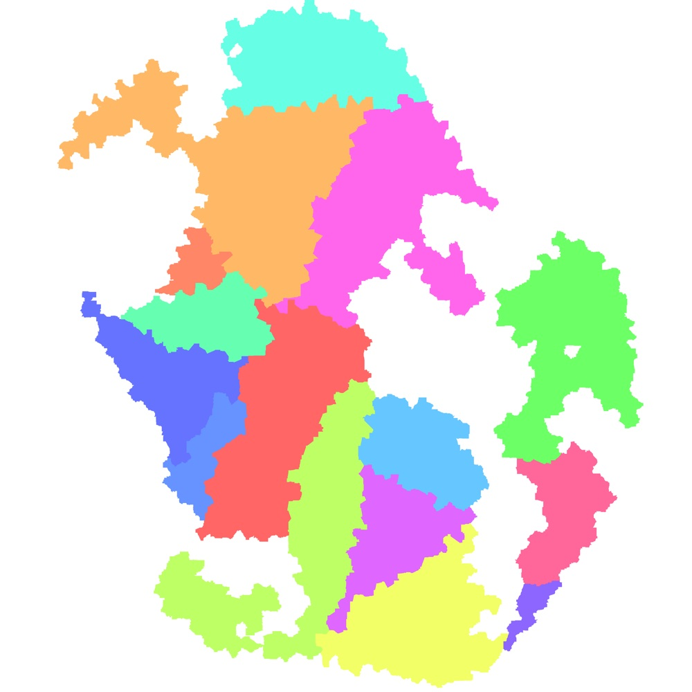
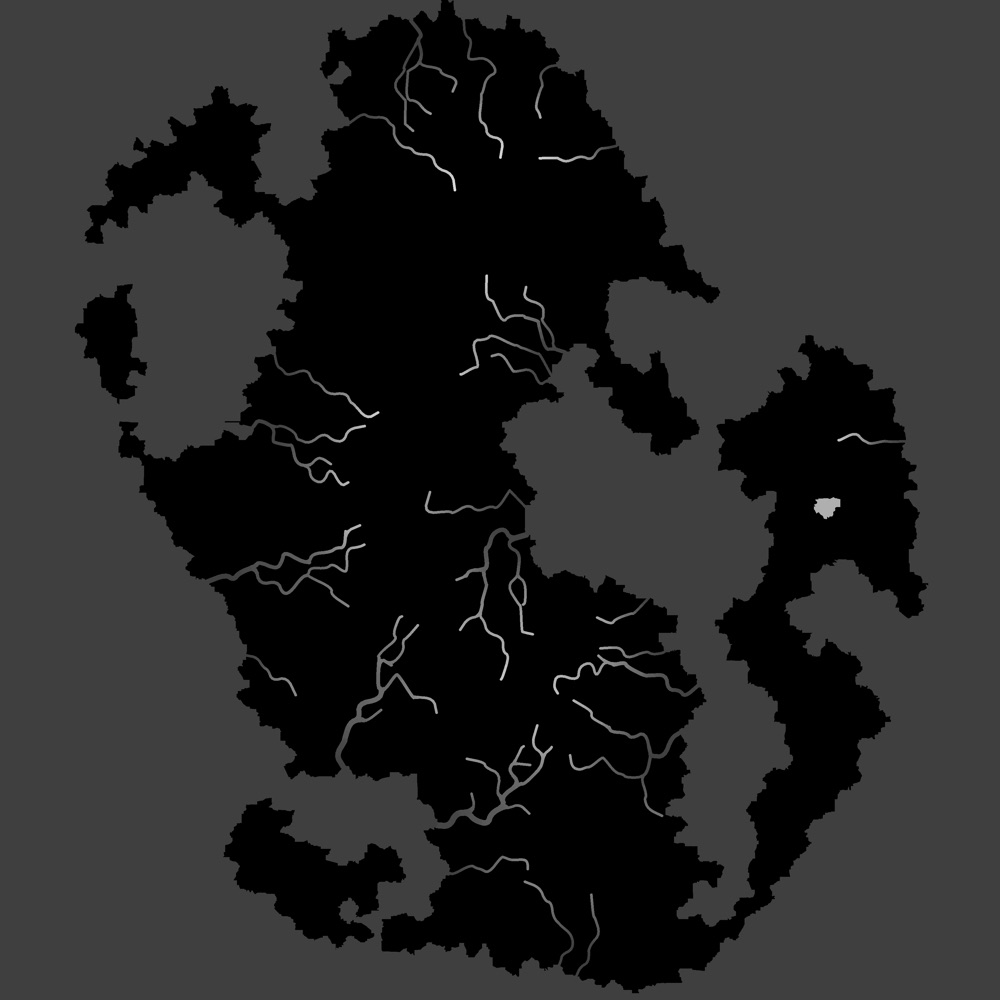
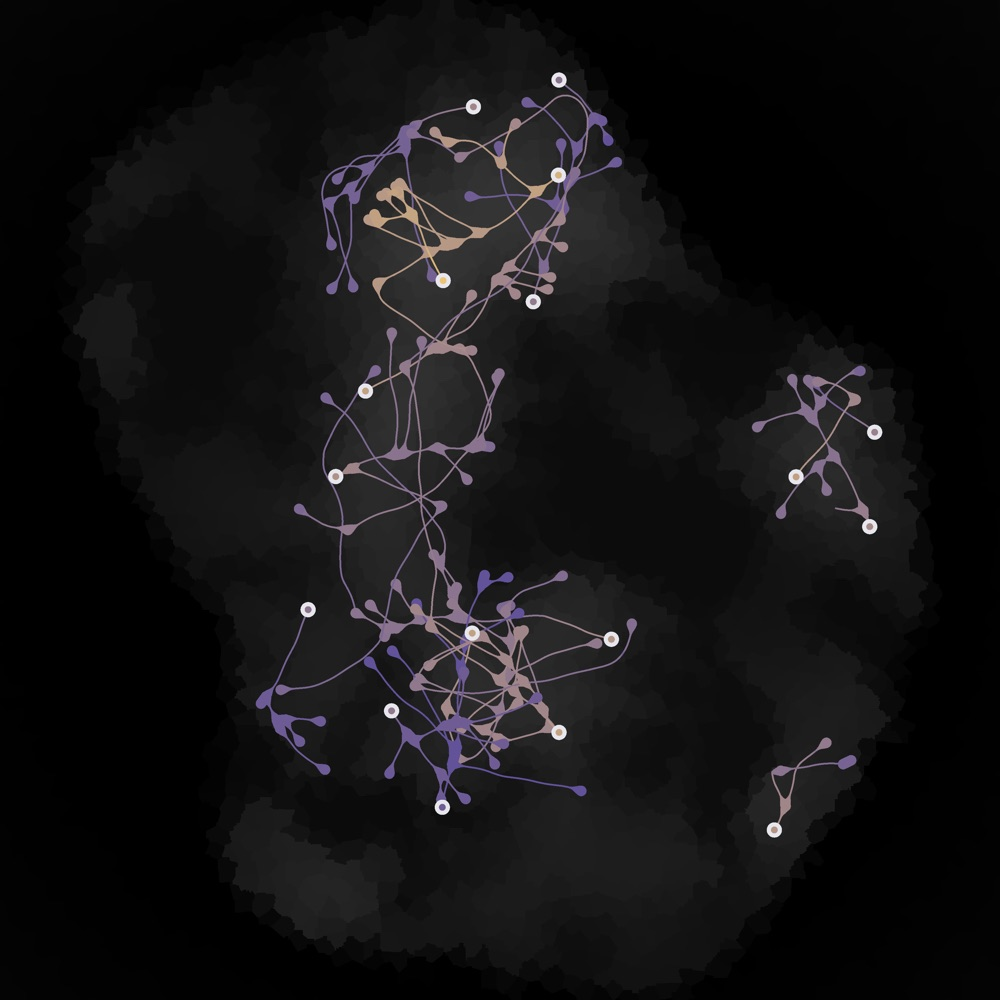
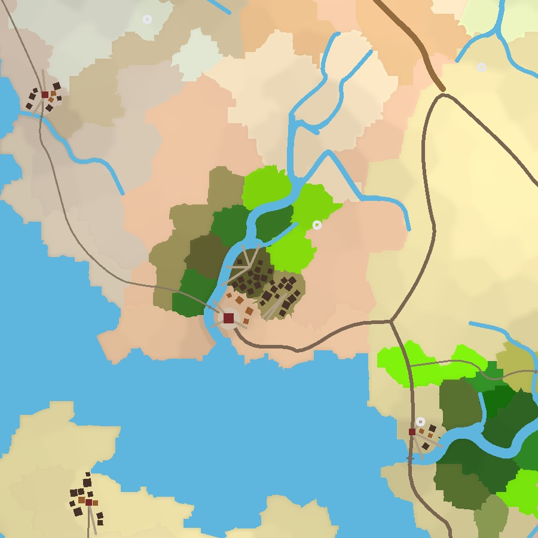

Terrain and climate
- Five landmass shapes, including fusing archipelagos
- Vertical scale in metres via
elevation_range_m - Temperature, moisture and 33 Whittaker biomes
World generation · open source
A seeded, header-only C++20 generator for whole fantasy worlds.
mapcoopa turns a seed and a MapConfig into a MapGraph: Voronoi cells
with elevation, climate and one of 33 biomes, rivers that run downhill to the sea, a graded road
network, nations and provinces, named settlements with streets and buildings, landmarks, and
multi-level cave systems. It produces data, not pixels. The graph saves to YAML so a game
can load a world it did not generate, and a software renderer draws nine PNG layers for inspection.

Real scale
One grid cell is 60 m, so the default map is 4.8 km square. Every physical size in the config is in metres, and the default render is one pixel per metre. Landmasses can be a rectangle, circle, triangle, a single irregular continent, or an archipelago whose islands fuse when they land close together.
Layers






What it generates
elevation_range_mwater_level per lake or sea, ready for a water meshcoopa::maps, no graphics dependencysave_map() / load_map() round-trip the whole graph through YAMLHow it works
MapGenerator lays a jittered point grid, triangulates it with delaunator and reads the
Voronoi dual off the triangulation. Fourteen passes then annotate the graph in a fixed order. Each
pass is one header, and each can be switched off with an enable_* key.
#include <coopa/debug/logger.h>
#include <coopa/maps/map_generator.h>
#include <coopa/maps/map_yaml.h>
namespace maps = coopa::maps;
maps::MapConfig config;
config.seed = 42;
config.noise_island.seed = config.seed; // noise fields have their own seeds
config.grid_size = 40; // 40 cells x 60 m = 2.4 km square
coopa::debug::Logger logger("worldgen");
maps::MapGenerator generator(config, logger);
generator.generate();
const maps::MapGraph& map = generator.graph();
for (const maps::MapTown& town : map.towns) {
// Grid units; multiply by meters_per_grid_unit for metres.
spawn_town(town.name, town.point.x, town.point.y, town.population);
}
maps::save_map(map, config, "world.yaml");Use it
The mapcoopa tool writes a world's YAML and every render layer in a few seconds.
In C++, add the repository with add_subdirectory() and link coopa::maps.
The graph's records refer to each other by index, never by pointer, so it saves and loads cleanly.
Builds on libcoopa, checked out as a sibling directory. A port and extension of Amit Patel's Polygonal Map Generation.
Used by
toyengine builds streamed 3D terrain from mapcoopa worlds. Chunks are meshed on the job system around the camera, and tile shapes are mesh assets, so the whole look of a world changes with a line of YAML.